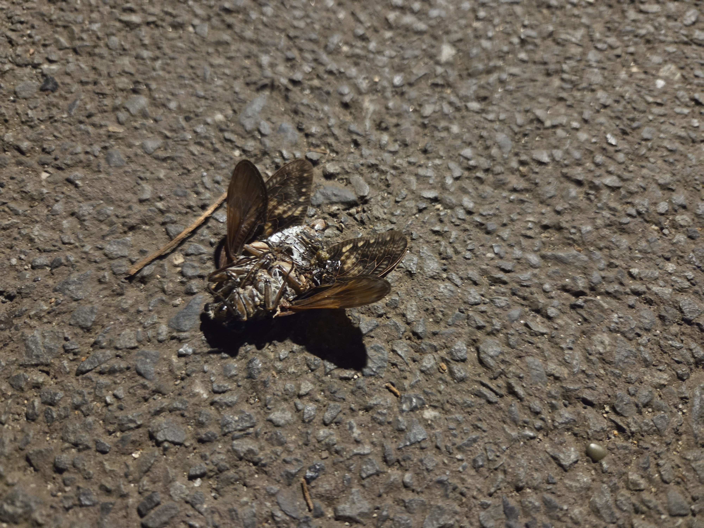
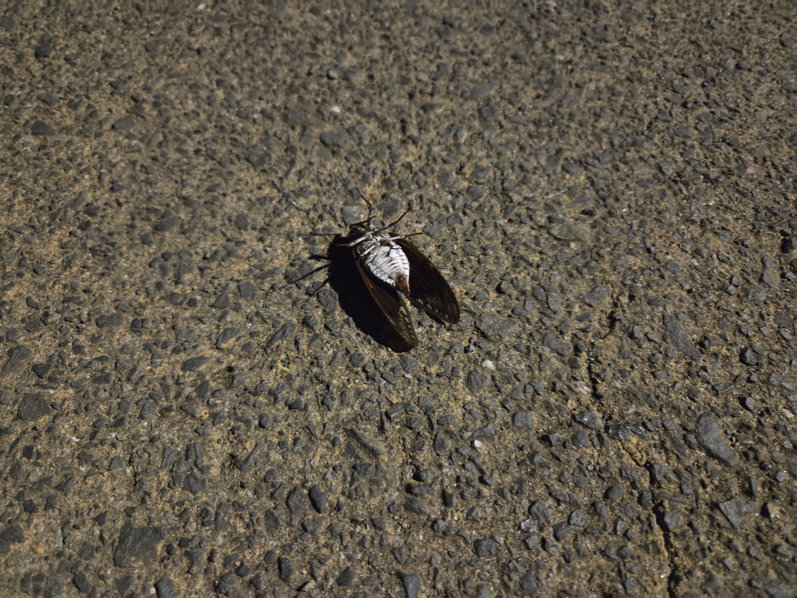
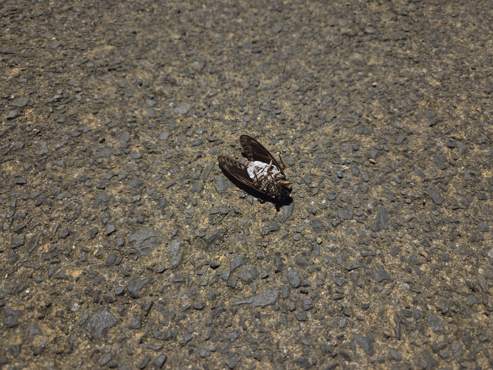
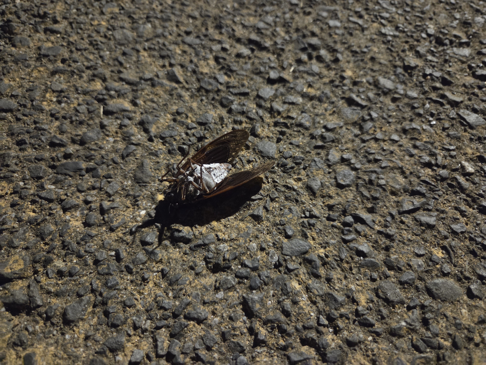
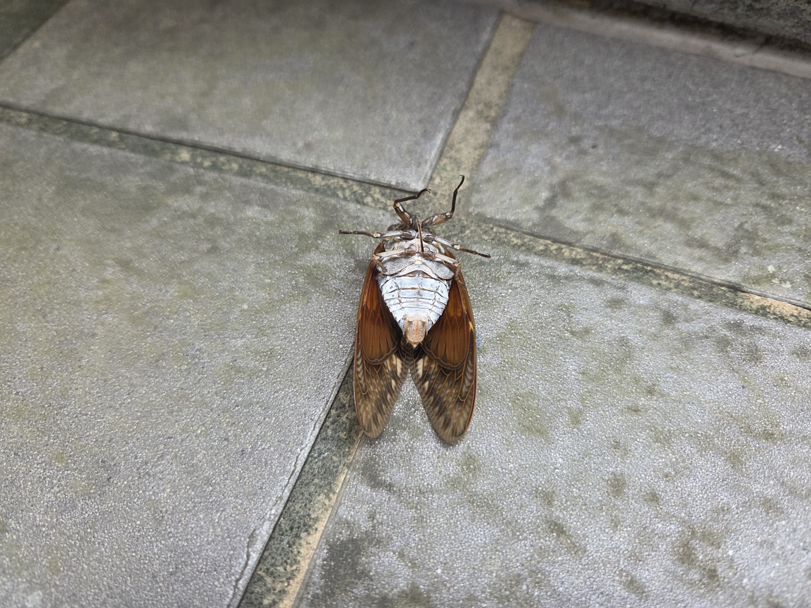
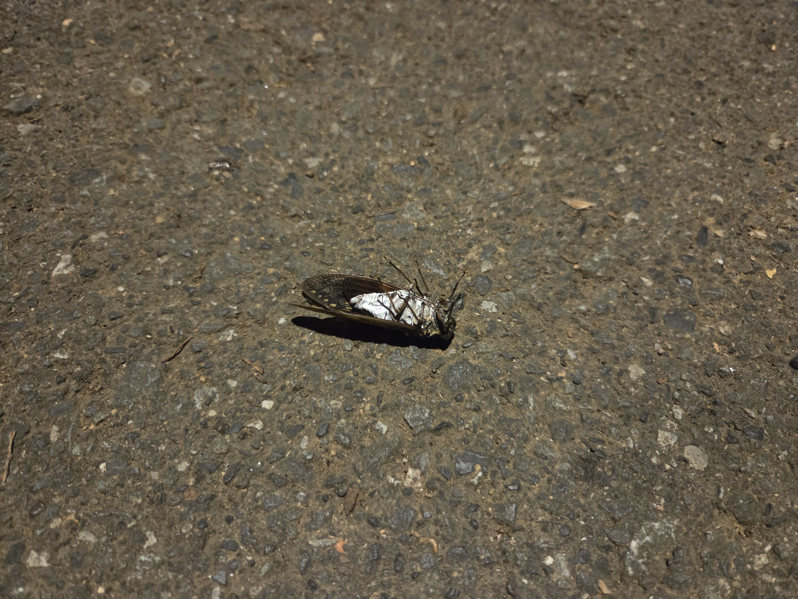
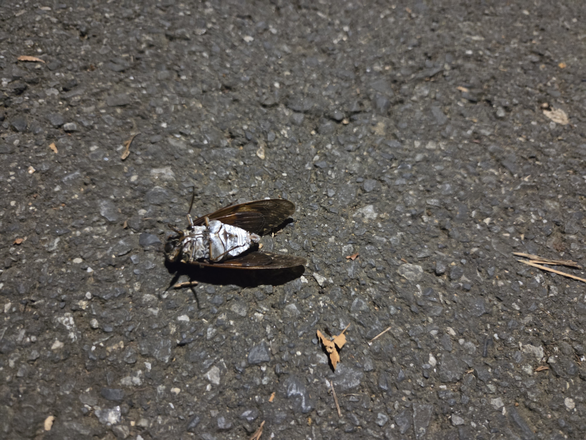
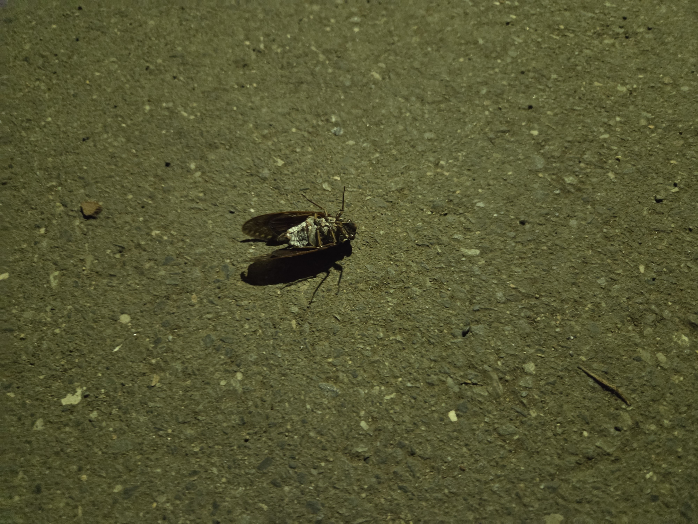
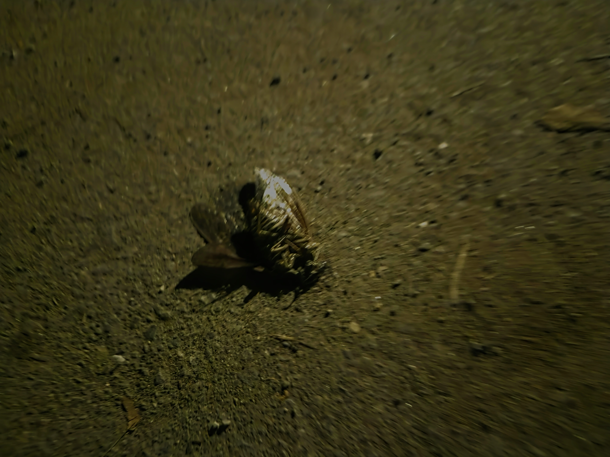
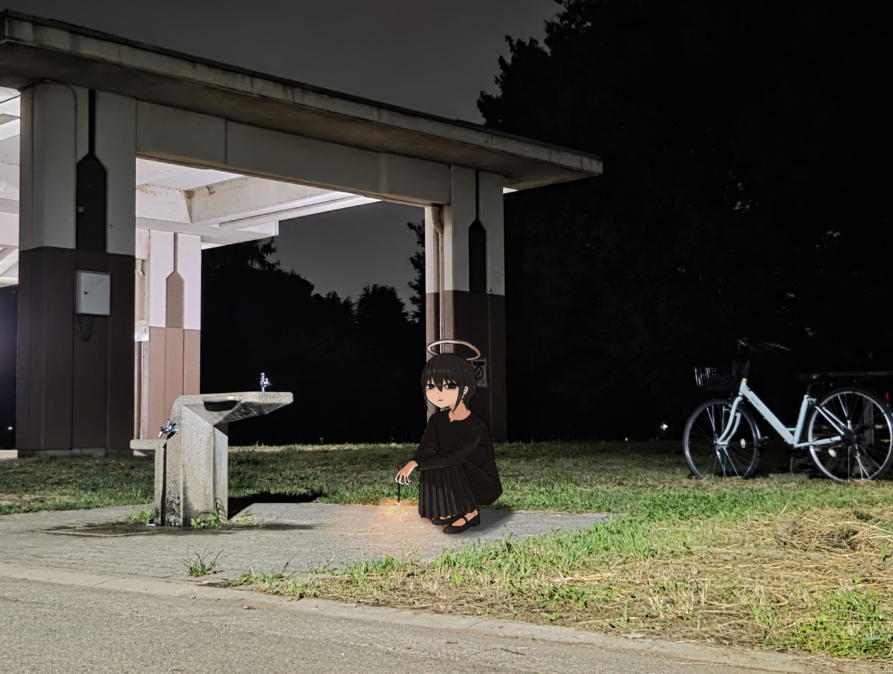

こんにちは、ザクザク食感です。
土曜（8/29）の夜、やるべきことを片付けたうえにクレカの限度額も復活して、清々しい気持ちで外に出たら、半袖ではきついぐらい外が寒かった。
夏が終わった……
そもそも夏が好きなのもあるが、今年は帰省せずに引きこもってばっかりだったので、夏を体感しきれずに終わるのが悲しい。
今年の夏したことを思い返すと、恋人にめっちゃ誕生日を祝ってもらったことと、友達と遊んだのが何回か、あとはちいかわの映画を見たこと、スプラトゥーンレイダースをしたこと、まのさばをしたこと……
まあ悪くないか、でもほぼ屋内で完結することしかしていない。
なんかせめて海行くとかしたかったけど、しなかったな……
というか上京してから海に行ったことないか？ 思い返すと帰省したときしか夏らしいことしてない
東京の楽しみ方を4年経っても理解してない
夏といえば、毎年やってるセミの死骸の写真撮影の今年の分を貼ります









9枚しかなかった
昔は10ツイート分くらい集めてたのに……マジで外出なかったんだな
外に出てないとは言っても完全に引きこもっているわけではなくて、ダイエットのためにやる気がある日は自転車で外に出てはいる。
いつも行っている公園で、中学生ぐらいの子たちが花火をしていた。
いいな～と思ったので、僕も花火をしたことにした。

なんか虚し……売れ残りの花火があったら今のうちに買っておこうかな
それでは、さようなら。